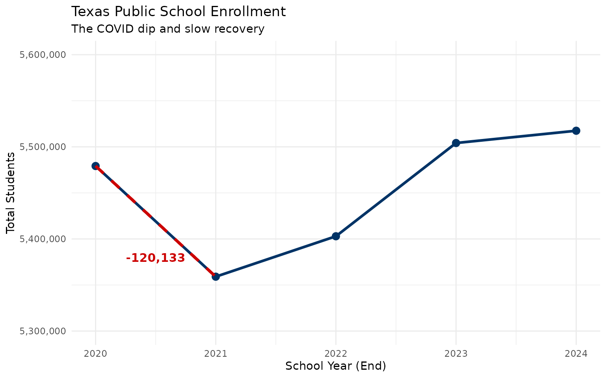
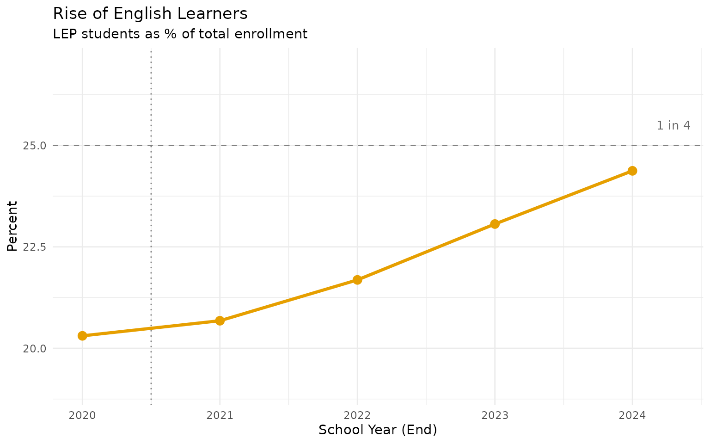
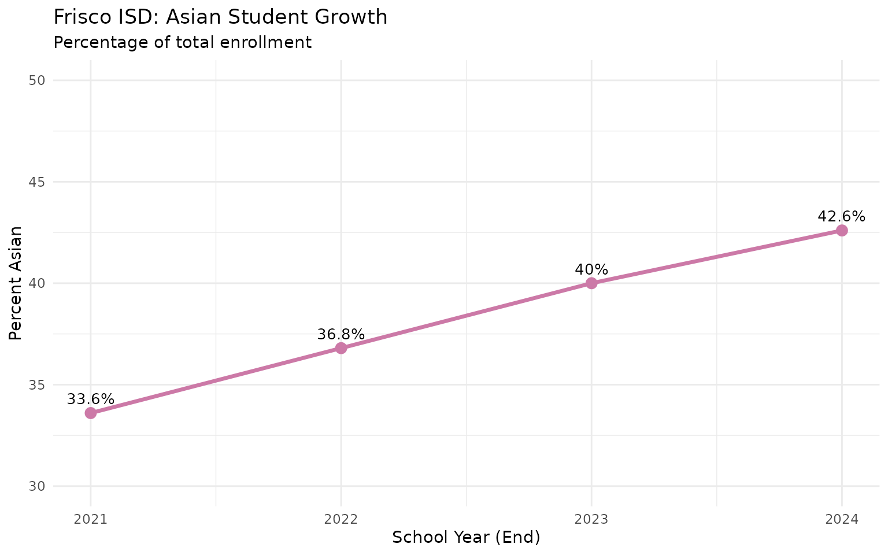
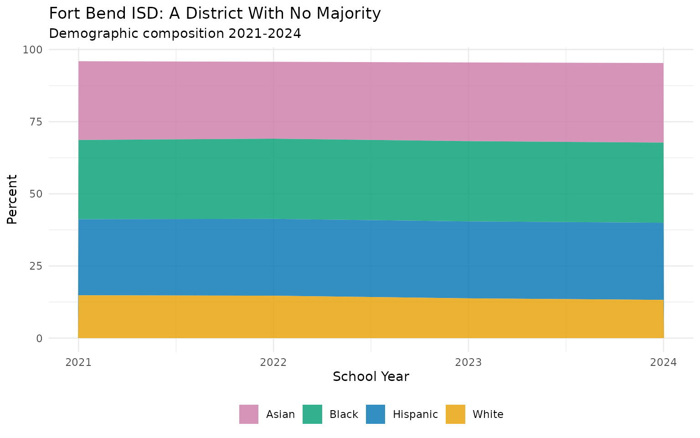
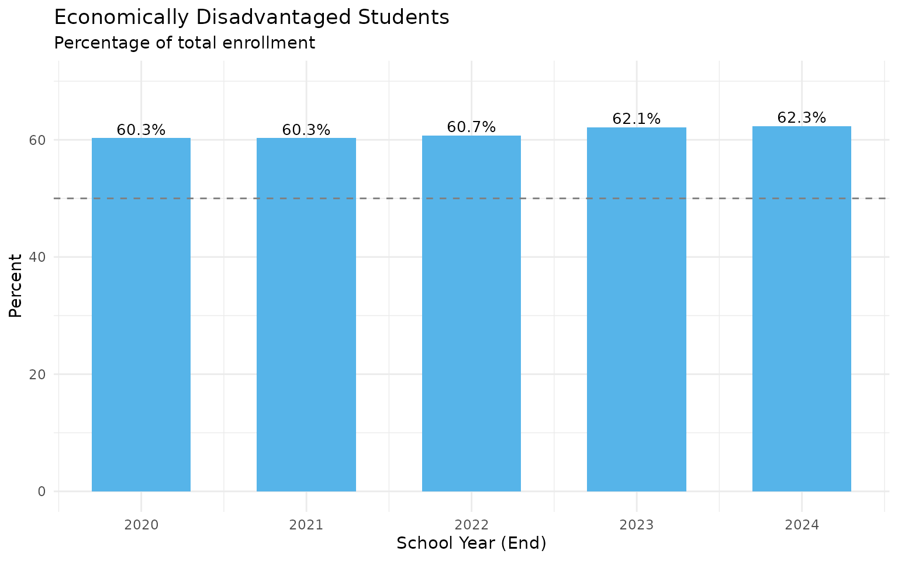
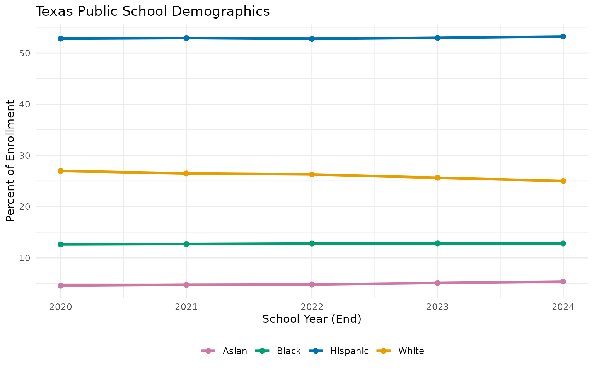

10 Things You Didn't Know About Texas Schools
Source:vignettes/district-hooks.Rmd
district-hooks.RmdTexas public schools enroll over 5.5 million students across 1,200+ districts, making it the second-largest school system in the United States. This analysis explores the most striking patterns in Texas enrollment data from 2020-2024.
# Fetch 5 years of enrollment data
enr <- fetch_enr_multi(2020:2024, use_cache = TRUE)1. COVID Erased a Decade of Growth in One Year
The pandemic caused the largest single-year enrollment drop in Texas history. Between 2020 and 2021, Texas public schools lost 120,133 students—equivalent to the entire enrollment of El Paso ISD, the 7th largest district in the state.
state_trend <- enr %>%
filter(is_state, subgroup == "total_enrollment", grade_level == "TOTAL") %>%
select(end_year, n_students) %>%
arrange(end_year) %>%
mutate(
change = n_students - lag(n_students),
pct_change = round(change / lag(n_students) * 100, 2)
)
print(state_trend)## end_year n_students change pct_change
## 1 2020 5479173 NA NA
## 2 2021 5359040 -120133 -2.19
## 3 2022 5402928 43888 0.82
## 4 2023 5504150 101222 1.87
## 5 2024 5517464 13314 0.24
ggplot(state_trend, aes(x = end_year, y = n_students)) +
geom_line(linewidth = 1.2, color = "#003366") +
geom_point(size = 3, color = "#003366") +
geom_segment(aes(x = 2020, xend = 2021, y = 5479173, yend = 5359040),
color = "#CC0000", linewidth = 1.2, linetype = "dashed") +
annotate("text", x = 2020.5, y = 5380000, label = "-120,133",
color = "#CC0000", fontface = "bold", size = 4) +
scale_y_continuous(labels = comma, limits = c(5300000, 5600000)) +
labs(
title = "Texas Public School Enrollment",
subtitle = "The COVID dip and slow recovery",
x = "School Year (End)", y = "Total Students"
) +
theme_minimal()
Enrollment has since recovered, surpassing pre-pandemic levels by 2023. But the demographic composition of that recovery tells a very different story.
2. One in Four Students is Now an English Learner
The proportion of Limited English Proficient (LEP) students grew by 4.1 percentage points in just five years—from 20.3% to 24.4% of all students. This is the single largest demographic shift in the data.
lep_trend <- enr %>%
filter(is_state, subgroup == "lep", grade_level == "TOTAL") %>%
select(end_year, n_students, pct) %>%
mutate(pct_display = round(pct * 100, 1))
print(lep_trend %>% select(end_year, n_students, pct_display))## end_year n_students pct_display
## 1 2020 1112674 20.3
## 2 2021 1108207 20.7
## 3 2022 1171661 21.7
## 4 2023 1269408 23.1
## 5 2024 1344804 24.4
ggplot(lep_trend, aes(x = end_year, y = pct * 100)) +
geom_line(linewidth = 1.2, color = "#E69F00") +
geom_point(size = 3, color = "#E69F00") +
geom_hline(yintercept = 25, linetype = "dashed", color = "gray50") +
annotate("text", x = 2024.3, y = 25.5, label = "1 in 4", color = "gray40", size = 3.5) +
scale_y_continuous(limits = c(19, 27)) +
labs(
title = "Rise of English Learners",
subtitle = "LEP students as % of total enrollment",
x = "School Year (End)", y = "Percent"
) +
theme_minimal()
This has profound implications for staffing, curriculum, and resource allocation across the state. Schools need more ESL teachers, bilingual programs, and translated materials than ever before.
3. Coppell ISD is Texas’s First Asian-Majority School District
In a striking demographic shift, Coppell ISD became Texas’s first Asian-majority public school district, with 56.7% of students identifying as Asian in 2024. Nearby Frisco ISD is close behind at 42.6%—up from 33.6% in just three years.
# Districts with highest Asian percentage
asian_top <- enr %>%
filter(is_district, subgroup == "asian", grade_level == "TOTAL", end_year == 2024) %>%
inner_join(
enr %>% filter(is_district, subgroup == "total_enrollment",
grade_level == "TOTAL", end_year == 2024) %>%
select(district_id, total = n_students),
by = "district_id"
) %>%
filter(total >= 10000) %>%
arrange(desc(pct)) %>%
select(district_name, total, n_students, pct) %>%
mutate(pct = round(pct * 100, 1)) %>%
head(10)
print(asian_top)## district_name total n_students pct
## 1 COPPELL ISD 13394 7591 56.7
## 2 FRISCO ISD 66551 28349 42.6
## 3 PROSPER ISD 28394 8312 29.3
## 4 ALLEN ISD 21319 6201 29.1
## 5 FORT BEND ISD 80034 22080 27.6
## 6 PLANO ISD 47753 11207 23.5
## 7 ROUND ROCK ISD 46042 10126 22.0
## 8 KATY ISD 94589 16311 17.2
## 9 WYLIE ISD 19166 3227 16.8
## 10 LEWISVILLE ISD 48356 8123 16.8
# Frisco's Asian population growth
frisco_asian <- enr %>%
filter(grepl("FRISCO", district_name), is_district,
grade_level == "TOTAL", subgroup == "asian") %>%
select(end_year, n_students, pct) %>%
mutate(pct = round(pct * 100, 1))
ggplot(frisco_asian, aes(x = end_year, y = pct)) +
geom_line(linewidth = 1.2, color = "#CC79A7") +
geom_point(size = 3, color = "#CC79A7") +
geom_text(aes(label = paste0(pct, "%")), vjust = -0.8, size = 3.5) +
scale_y_continuous(limits = c(30, 50)) +
labs(
title = "Frisco ISD: Asian Student Growth",
subtitle = "Percentage of total enrollment",
x = "School Year (End)", y = "Percent Asian"
) +
theme_minimal()
These districts in the Dallas-Fort Worth metroplex reflect changing immigration and migration patterns, with significant growth in families from India, China, and other Asian countries.
4. Fort Worth ISD Lost 14% of Its Students
While statewide enrollment recovered after COVID, urban districts continue to hemorrhage students. Fort Worth ISD lost 11,801 students (-14.3%), making it the fastest-declining large district in Texas.
# Calculate 2020-2024 changes
d2020 <- enr %>%
filter(is_district, subgroup == "total_enrollment",
grade_level == "TOTAL", end_year == 2020) %>%
select(district_id, n_2020 = n_students)
d2024 <- enr %>%
filter(is_district, subgroup == "total_enrollment",
grade_level == "TOTAL", end_year == 2024) %>%
select(district_id, district_name, n_2024 = n_students)
losses <- d2020 %>%
inner_join(d2024, by = "district_id") %>%
mutate(
change = n_2024 - n_2020,
pct_change = round((change / n_2020) * 100, 1)
)
# Largest percentage losses among big districts
losses %>%
filter(n_2020 >= 10000) %>%
arrange(pct_change) %>%
select(district_name, n_2020, n_2024, change, pct_change) %>%
head(10)## district_name n_2020 n_2024 change pct_change
## 1 FORT WORTH ISD 82704 70903 -11801 -14.3
## 2 ALDINE ISD 67130 57737 -9393 -14.0
## 3 BROWNSVILLE ISD 42989 37032 -5957 -13.9
## 4 HARLANDALE ISD 13654 11781 -1873 -13.7
## 5 YSLETA ISD 40404 34875 -5529 -13.7
## 6 LAREDO ISD 23665 20557 -3108 -13.1
## 7 ALIEF ISD 45281 39451 -5830 -12.9
## 8 HOUSTON ISD 209309 183603 -25706 -12.3
## 9 LA JOYA ISD 27276 23995 -3281 -12.0
## 10 ABILENE ISD 16456 14482 -1974 -12.0Houston ISD’s absolute loss of 25,706 students represents more students than 90% of Texas districts even enroll.
5. IDEA Public Schools Grew 24% in Three Years
IDEA Public Schools, a charter network operating across Texas, grew from 62,158 to 76,819 students between 2021 and 2024—a gain of 14,661 students (+23.6%).
idea <- enr %>%
filter(district_name == "IDEA PUBLIC SCHOOLS", is_district,
subgroup == "total_enrollment", grade_level == "TOTAL") %>%
select(end_year, n_students) %>%
arrange(end_year)
print(idea)## end_year n_students
## 1 2021 62158
## 2 2022 67988
## 3 2023 74217
## 4 2024 76819
# Top growing large districts
growth <- losses %>%
filter(n_2020 >= 5000) %>%
arrange(desc(pct_change))
growth %>%
select(district_name, n_2020, n_2024, change, pct_change) %>%
head(10)## district_name n_2020 n_2024 change pct_change
## 1 HALLSVILLE ISD 11452 21266 9814 85.7
## 2 PROSPER ISD 16789 28394 11605 69.1
## 3 PRINCETON ISD 5414 8671 3257 60.2
## 4 CLEVELAND ISD 7559 11945 4386 58.0
## 5 IDEA PUBLIC SCHOOLS 49480 76819 27339 55.3
## 6 MEDINA VALLEY ISD 5847 8656 2809 48.0
## 7 PREMIER HIGH SCHOOLS 5345 7819 2474 46.3
## 8 YES PREP PUBLIC SCHOOLS INC 12074 17622 5548 45.9
## 9 FORNEY ISD 11944 16962 5018 42.0
## 10 ROYSE CITY ISD 6585 9338 2753 41.8Charter networks and suburban districts are absorbing students from declining urban districts, fundamentally reshaping Texas public education.
6. Fort Bend ISD: A District With No Majority
Fort Bend ISD is one of the most diverse school districts in America. No racial group exceeds 28% of enrollment—White (13.2%), Black (27.8%), Hispanic (26.7%), and Asian (27.6%) students are nearly equally represented.
fb_demo <- enr %>%
filter(district_name == "FORT BEND ISD", is_district, grade_level == "TOTAL",
subgroup %in% c("white", "black", "hispanic", "asian")) %>%
select(end_year, subgroup, pct) %>%
mutate(pct = round(pct * 100, 1)) %>%
pivot_wider(names_from = subgroup, values_from = pct)
print(fb_demo)## # A tibble: 4 × 5
## end_year white black hispanic asian
## <int> <dbl> <dbl> <dbl> <dbl>
## 1 2021 14.8 27.5 26.4 27.3
## 2 2022 14.7 27.8 26.6 26.7
## 3 2023 13.8 27.8 26.7 27.3
## 4 2024 13.2 27.8 26.7 27.6
# Fort Bend demographics over time
enr %>%
filter(district_name == "FORT BEND ISD", is_district, grade_level == "TOTAL",
subgroup %in% c("white", "black", "hispanic", "asian")) %>%
mutate(pct = pct * 100) %>%
ggplot(aes(x = end_year, y = pct, fill = subgroup)) +
geom_area(alpha = 0.8) +
scale_fill_manual(
values = c("asian" = "#CC79A7", "black" = "#009E73",
"hispanic" = "#0072B2", "white" = "#E69F00"),
labels = c("Asian", "Black", "Hispanic", "White")
) +
labs(
title = "Fort Bend ISD: A District With No Majority",
subtitle = "Demographic composition 2021-2024",
x = "School Year", y = "Percent", fill = NULL
) +
theme_minimal() +
theme(legend.position = "bottom")
7. Kindergarten Enrollment Dropped 5.8%
Kindergarten enrollment fell from 383,585 to 361,329—a drop of 22,256 students (-5.8%). This could signal declining birth rates, rising private school enrollment, or families delaying school entry.
grade_trend <- enr %>%
filter(is_state, subgroup == "total_enrollment",
grade_level %in% c("PK", "K", "01", "05", "09", "12")) %>%
select(end_year, grade_level, n_students) %>%
pivot_wider(names_from = end_year, values_from = n_students) %>%
mutate(
change = `2024` - `2020`,
pct_change = round(change / `2020` * 100, 1)
)
print(grade_trend)## # A tibble: 6 × 8
## grade_level `2020` `2021` `2022` `2023` `2024` change pct_change
## <chr> <dbl> <dbl> <dbl> <dbl> <dbl> <dbl> <dbl>
## 1 PK 248413 196560 222767 243493 247979 -434 -0.2
## 2 K 383585 360865 370054 367180 361329 -22256 -5.8
## 3 01 391175 380973 384494 399048 385096 -6079 -1.6
## 4 05 417272 395436 387945 395111 399200 -18072 -4.3
## 5 09 448929 436396 475437 477875 472595 23666 5.3
## 6 12 352258 362888 360056 364317 365788 13530 3.8Pre-K also dropped, while high school grades grew. The pipeline is narrowing at the entry point—a trend that will ripple through the system for years.
8. 62% of Students Are Economically Disadvantaged
The share of economically disadvantaged students grew from 60.3% to 62.3%—nearly two-thirds of all students in Texas public schools.
econ_trend <- enr %>%
filter(is_state, subgroup == "econ_disadv", grade_level == "TOTAL") %>%
select(end_year, n_students, pct) %>%
mutate(pct = round(pct * 100, 1))
print(econ_trend)## end_year n_students pct
## 1 2020 3303974 60.3
## 2 2021 3229178 60.3
## 3 2022 3278452 60.7
## 4 2023 3415987 62.1
## 5 2024 3434955 62.3
ggplot(econ_trend, aes(x = end_year, y = pct)) +
geom_col(fill = "#56B4E9", width = 0.6) +
geom_hline(yintercept = 50, linetype = "dashed", color = "gray50") +
geom_text(aes(label = paste0(pct, "%")), vjust = -0.3, size = 3.5) +
scale_y_continuous(limits = c(0, 70)) +
labs(
title = "Economically Disadvantaged Students",
subtitle = "Percentage of total enrollment",
x = "School Year (End)", y = "Percent"
) +
theme_minimal()
Some large districts serve even higher concentrations of low-income students.
9. White Students Dropped Below 25%
White enrollment declined from 27.0% to 25.0% of total enrollment—a 2 percentage point drop in just five years. Meanwhile, Hispanic (53.2%) and Asian (5.4%) shares continue to grow.
demo_shift <- enr %>%
filter(is_state, grade_level == "TOTAL",
subgroup %in% c("white", "black", "hispanic", "asian", "multiracial")) %>%
select(end_year, subgroup, pct) %>%
mutate(pct = round(pct * 100, 1)) %>%
pivot_wider(names_from = subgroup, values_from = pct)
print(demo_shift)## # A tibble: 5 × 6
## end_year white black hispanic asian multiracial
## <int> <dbl> <dbl> <dbl> <dbl> <dbl>
## 1 2020 27 12.6 52.8 4.6 2.5
## 2 2021 26.5 12.7 52.9 4.7 2.7
## 3 2022 26.3 12.8 52.8 4.8 2.9
## 4 2023 25.6 12.8 53 5.1 3
## 5 2024 25 12.8 53.2 5.4 3.1
enr %>%
filter(is_state, grade_level == "TOTAL",
subgroup %in% c("white", "black", "hispanic", "asian")) %>%
mutate(pct = pct * 100) %>%
ggplot(aes(x = end_year, y = pct, color = subgroup)) +
geom_line(linewidth = 1.2) +
geom_point(size = 2) +
scale_color_manual(
values = c("hispanic" = "#0072B2", "white" = "#E69F00",
"black" = "#009E73", "asian" = "#CC79A7"),
labels = c("Asian", "Black", "Hispanic", "White")
) +
labs(
title = "Texas Public School Demographics",
x = "School Year (End)", y = "Percent of Enrollment",
color = NULL
) +
theme_minimal() +
theme(legend.position = "bottom")
10. 439 Districts Now Have Hispanic Majorities
The number of districts where Hispanic students are the majority grew from 419 in 2020 to 439 in 2024—now 36% of all Texas districts.
hisp_majority <- enr %>%
filter(is_district, subgroup == "hispanic", grade_level == "TOTAL") %>%
mutate(majority = pct > 0.5) %>%
group_by(end_year) %>%
summarize(
total_districts = n(),
hispanic_majority = sum(majority),
pct_majority = round(hispanic_majority / total_districts * 100, 1),
.groups = "drop"
)
print(hisp_majority)## # A tibble: 5 × 4
## end_year total_districts hispanic_majority pct_majority
## <int> <int> <int> <dbl>
## 1 2020 1202 419 34.9
## 2 2021 1204 428 35.5
## 3 2022 1207 433 35.9
## 4 2023 1209 438 36.2
## 5 2024 1207 439 36.429 districts flipped from non-majority to Hispanic majority between 2020 and 2024.
Summary
These ten findings illustrate the rapid transformation of Texas public education:
| Finding | Change (2020-2024) |
|---|---|
| COVID enrollment drop | -120,133 students (2020-21) |
| LEP students | 20.3% to 24.4% (+4.1 pts) |
| Coppell ISD Asian | Now 56.7% Asian |
| Fort Worth ISD | -14.3% (-11,801 students) |
| IDEA Public Schools | +23.6% since 2021 |
| Fort Bend ISD | No majority group (most diverse) |
| Kindergarten enrollment | -5.8% |
| Economically disadvantaged | 60.3% to 62.3% |
| White enrollment | 27.0% to 25.0% |
| Hispanic majority districts | 419 to 439 (+20) |
The data tells a story of suburbanization, rising poverty, linguistic diversity, and demographic transformation that will shape Texas education for decades to come.